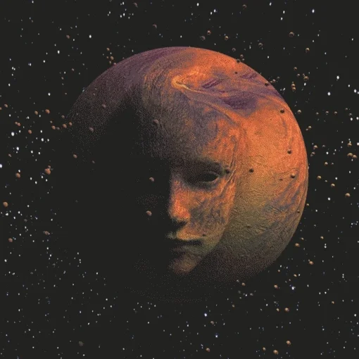

Lazy? click here if youre unkool...

[ the gatekeeper ]
[_][#][x]
Proceed
Proceed
Ask
Proceed to Final Question
Reveal My Destiny
✨ Enter the Realm ✨
Leave thy realm… or return with the right answers…
Your browser does not support the audio element.